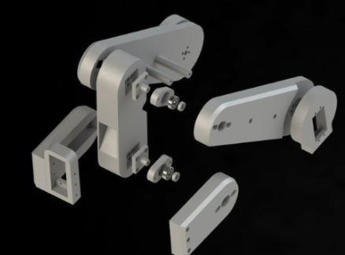

During my recent internship, I encountered a pressing issue surrounding the management and organization of car seats after testing phases. The complexities of post-testing handling and transfer processes became evident, prompting me to embark on a mission to devise a cutting-edge remedy. Drawing upon my skills and expertise, I conceptualized, designed, and brought to life an ingenious solution: the Automated Car Seat Sorting Robotic Arm. This endeavor showcased not only my proficiency in a range of technological tools but also my ability to think innovatively and tackle intricate challenges head-on.
At the heart of my solution was the fusion of several key technologies and disciplines. Leveraging my expertise in SolidWorks, I meticulously crafted the design of the Automated Car Seat Sorting Robotic Arm, ensuring both its efficiency and effectiveness in addressing the sorting challenges. The arm's structural integrity, precision movement, and compatibility with other components were all carefully considered during this phase.
Utilizing 3D printing techniques, I translated the intricate design into a tangible reality. This phase required a comprehensive understanding of material properties, manufacturing processes, and quality control, resulting in a functional robotic arm that seamlessly integrated with the existing setup.
The integration of hardware and software was a pivotal aspect of the project. Employing my proficiency in Arduino, I orchestrated the communication between the robotic arm's components, enabling coordinated movements and responses. This was further enhanced by my adeptness in ROS2 (Robot Operating System 2), which facilitated a modular and adaptable framework for the arm's control and interaction with other systems.
A significant highlight of the Automated Car Seat Sorting Robotic Arm was its incorporation of computer vision capabilities, a feat accomplished through my adeptness in OpenCV. By harnessing the power of computer vision, the robotic arm gained the ability to discern and differentiate between various colors of pallets. This groundbreaking capability empowered the robot to autonomously and accurately sort car seats with minimal human intervention. The amalgamation of mechanical precision and sophisticated vision recognition was the crux of the system's autonomy and efficiency.
The software aspect of the project was underscored by my proficiency in C++, which enabled the development of robust and responsive control algorithms. These algorithms not only governed the arm's movements but also ensured real-time decision-making based on the visual data provided by the OpenCV-powered vision system. This synergy between hardware and software epitomized the sophistication of the Automated Car Seat Sorting Robotic Arm.
In conclusion, my internship experience led me to identify and address significant post-testing challenges through the creation of an innovative and highly capable Automated Car Seat Sorting Robotic Arm. This project not only highlighted my proficiency in tools such as SolidWorks, 3D printing, Arduino, ROS2, C++, and OpenCV but also demonstrated my ability to envision, design, and implement intricate solutions that have the potential to revolutionize traditional processes.